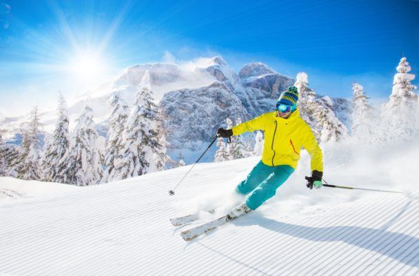
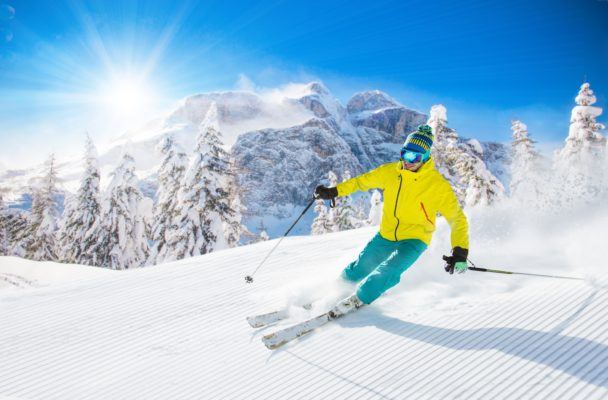

Виды зимнего спорта
Зимние виды спорта — это виды спорта, которыми занимаются на снегу или на льду. Большинство таких видов спорта являются видами катания на лыжах, коньках и санях. Традиционно такие виды спорта существовали только в холодных областях, где есть зима с температурами ниже нуля, но искусственный снег и искусственный лед позволяют проводить мероприятия практически в любых климатических условиях. Искусственный лёд может использоваться, чтобы обеспечить наличие ледовых катков для катания на коньках и хоккея в жарком климате.